plot_waffle creates a waffle plot to visualise categorical data. This plot is useful for
showing proportions or percentages in a visually appealing and easily understandable format.
Usage
plot_waffle(
data,
group,
values = NULL,
weight = NULL,
isolateVar = NULL,
orderPlots = c("none", "descending", "ascending"),
title = NULL,
groupColours = colour_pal("catExtended"),
backgroundColour = colour_pal("French Grey"),
backgroundAlpha = 0.5,
borderColour = "white",
borderWidth = 0.5
)Arguments
- data
A data frame containing the dataset to be visualized.
- group
The column in
datathat contains the categorical groups for the waffle plot.- values
Optional: The column in
datathat contains the numerical values used for calculating proportions. If not provided, counts ofgroupcategories are used.- weight
Optional: A weighting variable to be used in calculating group frequencies.
- isolateVar
Optional: A specific variable from
groupto isolate in the plot.- orderPlots
Specifies how the plots should be ordered. Accepted values are 'none', 'ascending', or 'descending'. Default is 'none'.
- title
The title of the waffle plot. If the title matches the group name, the function will return the label attribute if present.
- groupColours
A named or unnamed vector of colours for each category in the plot.
- backgroundColour
Colour for the background of the plot.
- backgroundAlpha
Alpha value (transparency) for the background.
- borderColour
Colour for the border of the tiles in the plot.
- borderWidth
Width of the border of the tiles. Default = 0.5.
Examples
data <- data.frame(
Category = c("A", "B", "C"),
Count = c(30, 40, 30)
)
plot_waffle(data,
group = "Category",
values = "Count",
title = "Sample Waffle Plot",
orderPlots = "descending",
groupColours = c(A = "blue", B = "yellow", C = "red"))
